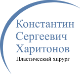
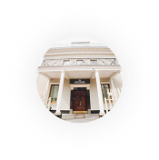

Хирургический стаж в эстетической медицине с 2014 года

Двухэтажная клиника 1000 кв.м открылась в 2020 году в Москве
Посмотреть видео о клинике
Звоните, Пн-ВС 8:00 - 21:00
+7 (499) 286 88 60
Москва, ул. Б. Очаковская, д.31
Ринопластика 110 000 рублей в
рассрочкуот 20 минут
Приходите на консультацию, если хотите:
Укоротить, приподнять или опустить нос
Расширить или сузить кончик носа
Восстановить после травмы или убрать горбинку
Начать нормально дышать
Результат операции видео 15 сек.